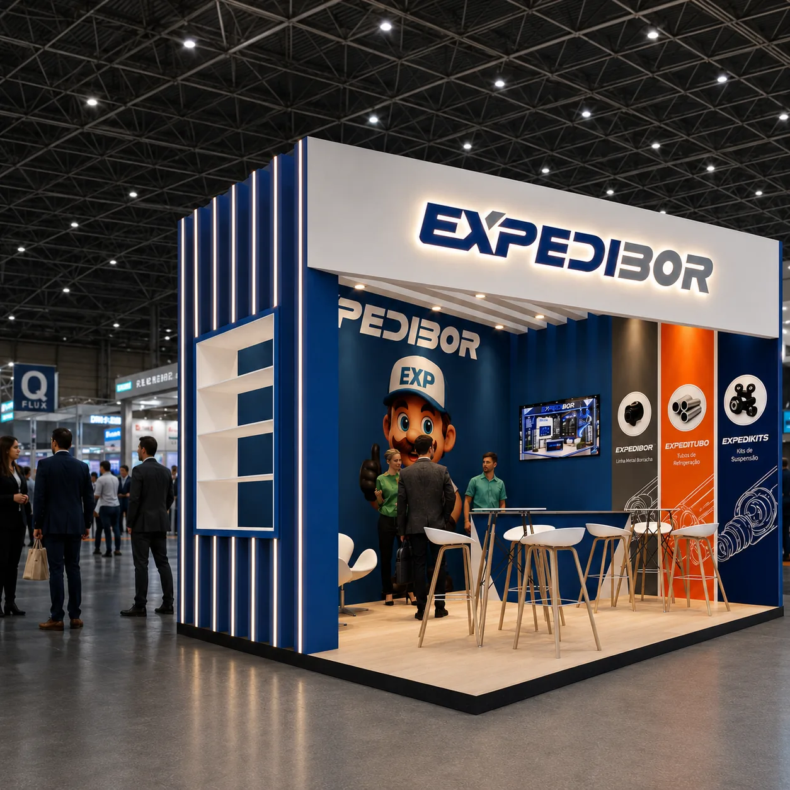
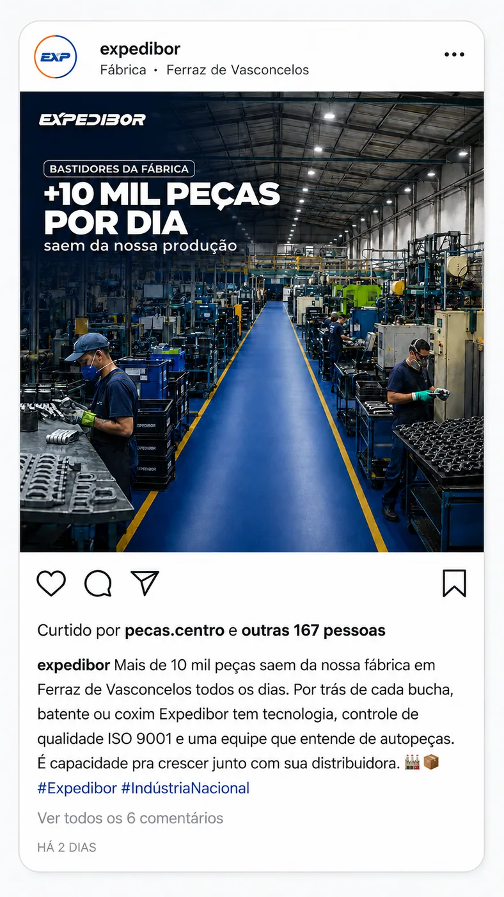
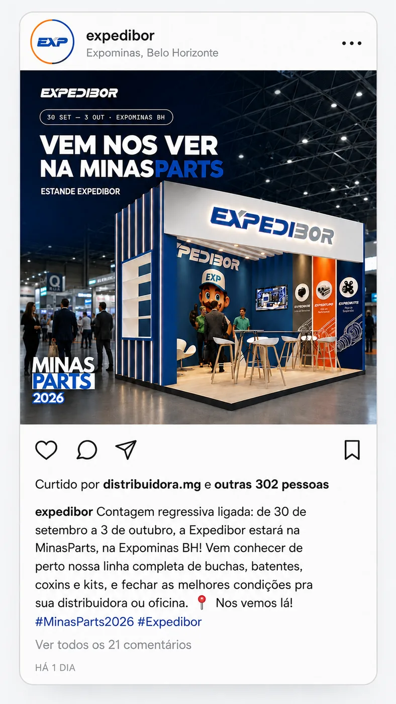
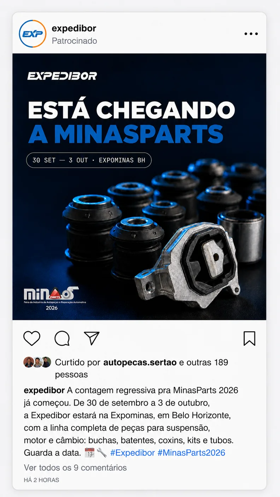
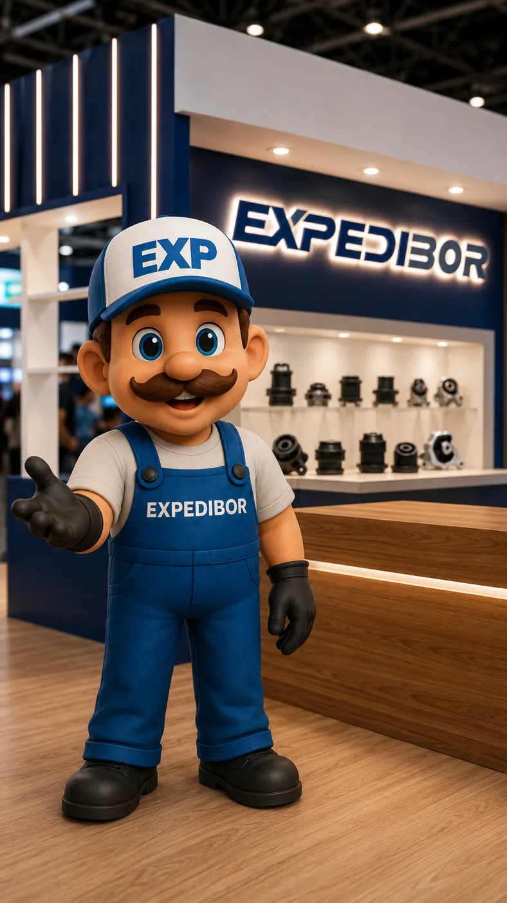

Transformar quatro dias de feira em meses de marca.
Campanha B2B de awareness desenhada para fazer distribuidores, lojistas e aplicadores chegarem à MinasParts já familiarizados com a Expedibor — conectando pesquisa, mídia, conceito e produção assistida por IA.
O primeiro contato não deveria acontecer no estande.
A feira dura poucos dias. A estratégia partiu da hipótese de que o trade teria mais chance de reconhecer e considerar a marca se a familiaridade fosse construída antes do evento.

Concentrar verba onde lembrança de marca faria mais sentido.
O plano original considerava Meta e Google. Com a indisponibilidade da conta de Google Ads, a estratégia foi redesenhada para concentrar aproximadamente R$1.500 no Meta, priorizando alcance, frequência e formatos de Feed, Reels e Stories.
O canal mudou. O objetivo, não.
Em vez de transformar a campanha em tráfego só porque havia menos canais disponíveis, o plano preservou o objetivo de awareness e redistribuiu a verba.
Cada peça precisava cumprir uma função.
Os conceitos foram organizados por intenção: apresentar a capacidade industrial, criar familiaridade, gerar antecipação, convidar o trade, mostrar amplitude de catálogo e dar personalidade ao evento com o mascote Expedito.




IA acelerou a produção. A direção continuou humana.
Imagem e vídeo foram usados como espaço de prototipagem rápida, mas o fluxo exigiu briefing, referência de marca, revisão, correção e composição final. Quando o modelo de vídeo não reproduziu com fidelidade o logo e a fala, a solução foi separar geração de cena e acabamento.
Quando a IA inventa, o processo precisa mudar.
O personagem e a cena ficaram com o modelo generativo; logo oficial, composição e controle de marca passaram para a etapa de pós-produção.
Uma boa ideia também precisa saber quando sair.
Uma rota criativa inicialmente centrada em especialização exclusiva em suspensão foi descartada após feedback de produto mostrar que a empresa também atende aplicações de motor e câmbio. O posicionamento passou a enfatizar profundidade de catálogo e cobertura de aplicações.